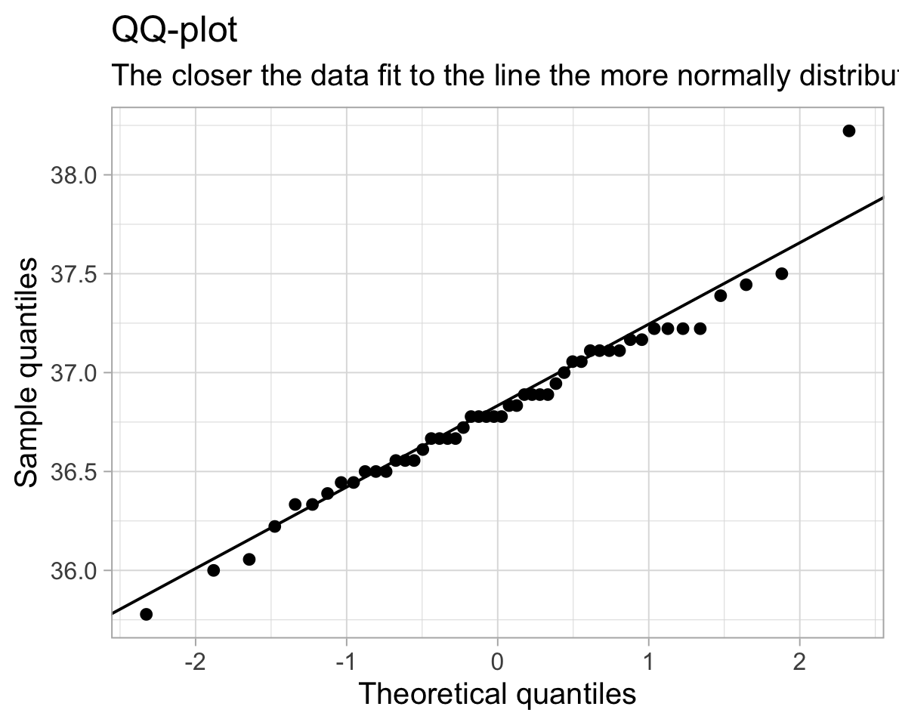

A one-sample t-test is a statistical procedure to test whether or not the mean of a population (\(\mu\)) is equal to some hypothesised value (\(\mu_0\)). Examples when you would use a one-sample t-test include:
Is the average weight of a dog greater than 20kg?
Is the mean body temperature not equal to 37 °C?
On the Beck Depression Inventory (BDI), a score of >25 is considered clinical diagnosis of depression. Is the average score of our population of interest (for instance, people with a specific disease) significantly above this cutoff?
Body temperature example
We will now recap the Body Temperature example, putting everything together. Recall the goal is to answer this question:
Has the average body temperature for healthy humans changed from the long-thought 37 °C?
Again, we will be using the data1 comprising measurements on body temperature and pulse rate for a sample of \(n = 50\) healthy subjects. The data are stored at the following address: https://uoepsy.github.io/data/BodyTemp.csv
For a one-sample t-test we are evaluating if the average body temperature is significantly different from the population mean of 37°C. It would be extremely time-consuming, costly (and near impossible) to take everyone’s body temperature. Instead, we might take a simple random sample of healthy humans and use the mean body temperature of this sample to estimate the true population mean.
Note
Simple random sampling (SRS)
Simple random sampling is a type of sampling technique. Sampling techniques are used by companies, researchers and individuals for a variety of reasons. Sampling strategies are useful when conducting surveys and answering questions about populations. There are many different methods researchers can use to obtain individuals to be in a sample. These are known as sampling methods.
Simple random sampling is, unsurprisingly, the simplest form of probability sampling: every member in the population has an equal chance of being selected in the sample. Individuals are usually selected by a random number generator or some other mean of random sampling.
The biggest benefit of SRS is it removes bias, as everyone has an equal chance of being selected. Furthermore, the sample is representative of the population.
First, we need to write the null and alternative hypotheses.
\[H_0 : \mu = 37 °C\]\[H_1 : \mu \neq 37 °C\]
Next, we read the data into R and calculate the average body temperature (sample statistic) of the sample group.
# A tibble: 1 × 4
xbar s mu0 n
<dbl> <dbl> <dbl> <int>
1 36.8 0.425 37 50
And then we can plug in these numbers to our equation.
P-value
We have our observed \(t\)-statistic of -3.14. We know that this is more extreme than the critical value of -2.009575.
What is the probability of obtaining a \(t\)-statistic at least as extreme as -3.14, assuming the null hypothesis to be true? In other words, what is the p-value?
Because our alternative hypothesis is two-tailed, we will reject the null hypothesis for extreme \(t\)-statistics in either direction. So we are calculating the probability of observing a value at least as extreme in either direction, and must multiply the one tail by 2.
2*pt(abs(t_obs), df =50-1, lower.tail =FALSE)
[1] 0.00285
And so, the probability of observing a value as extreme as -3.14 is 0.003 (i.e. very low!). Therefore, we have enough evidence to reject the null hypothesis and conclude that the mean body temperature of healthy adults is significantly lower than the long-held value of 37°C.
Calculating a one-sample t-test with one function
Now that we’ve gone through all that, you’ll be happy to know that we can do all of what we just did above (and more!) using just one simple function in R, called t.test().
The t.test() function takes several arguments, but for the current purposes, we are interested in t.test(x, mu, alternative, conf.level).
x is the data
mu is the hypothesized value of the mean in \(H_0\)
alternative is either "two.sided" (default), "less", or "greater", and specifies the direction of the alternative hypothesis.
conf.level confidence level of the interval. By default, this is 0.95 but you can change it to be for example 0.90 or 0.99.
result <-t.test(temp_data$BodyTemp, mu =37, alternative ="two.sided")result
One Sample t-test
data: temp_data$BodyTemp
t = -3, df = 49, p-value = 0.003
alternative hypothesis: true mean is not equal to 37
95 percent confidence interval:
36.7 36.9
sample estimates:
mean of x
36.8
As we can see, the output of the t.test gives us our t-value (-3.14), our degrees of freedom (df = 49), our p-value (0.002851). It also provides us with 95% CIs of the population mean and the mean of our sample body temp (36.81). It looks like everything matches up with our calculations above!
Assumptions
Check assumption that:
The data are continuous;
The data are independent;
The data are normally distributed OR the sample size is large enough (rule-of-thumb \(n \geq 30 30\)) and the data are not strongly skewed;
ggplot(temp_data, aes(sample = BodyTemp))+geom_qq()+geom_qq_line()+labs(title="QQ-plot", subtitle="The closer the data fit to the line the more normally distributed they are.",x ="Theoretical quantiles",y ="Sample quantiles")

shapiro.test(temp_data$BodyTemp)
Shapiro-Wilk normality test
data: temp_data$BodyTemp
W = 1, p-value = 0.3
The p-value here is 0.31, which is greater than \(\alpha = 0.05\). We therefore fail to reject the null hypothesis of the Shapiro-Wilk test that the sample came from a population that is normally distributed.
So our assumption for the one sample mean test holds!
Pets’ weights example
Data for a sample of 2000 licensed pets from the city of Seattle, USA, can be found at the following url: https://uoepsy.github.io/data/seattlepets.csv.
It contains information on the license numbers, issue date and zip-code, as well as data on the species, breeds and weights (in kg) of each pet.
We are interested in whether the average weight of a Seattle dog is greater than 20kg.
Definition of null and alternative hypotheses
Let \(\mu\) denote the mean weight (in kg) of all dogs in Seattle. We wish to test:
\[H_0: \mu = 20\]\[H_1: \mu > 20\]
Note
Question
Read the data into R.
Use summary() to have a look at your data.
Which variables are you going to need for our analysis?
license_issue_date license_number animals_name species
Length:2000 Length:2000 Length:2000 Length:2000
Class :character Class :character Class :character Class :character
Mode :character Mode :character Mode :character Mode :character
primary_breed secondary_breed zip_code weight_kg
Length:2000 Length:2000 Length:2000 Min. : 0.394
Class :character Class :character Class :character 1st Qu.: 4.697
Mode :character Mode :character Mode :character Median : 16.395
Mean : 15.241
3rd Qu.: 22.482
Max. :103.484
NA's :15
We’re going to need the weight_kg variable. Notice that there are some missing values (you can see that there are 15 NA’s). We will need to decide what to do with them.
Also, there are some cats in our data as well as the dogs which we are interested in. There are even a couple of goats! We will want to get rid of them..
Note
Question. Create a new dataset and call it dogs, which only has the dogs in it.
dogs <- pets %>%filter(species =="Dog")
Note
Question. Remove the rows having a missing weight.
There are two completely equivalent options. Pick only one of these two options to remove the missing entries, as both will achieve the same goal.
Option 1:
dogs <- dogs %>%drop_na(weight_kg)
Option 2:
Look at the help documentation for is.na (search in the bottom right window of RStudio, or type ?is.na)
dogs <- dogs %>%filter(!is.na(weight_kg))
It takes the dogs dataset, and it filters so that it will keep any rows where !is.na(weight_kg) is TRUE.
The is.na(weight_kg) will be TRUE wherever weight_kg is an NA and FALSE otherwise.
The ! before it flips the TRUEs and FALSEs, so that we have TRUE wherever weight_kg is a value other than NA, and FALSE if it isNA.
You can read it as “keep all rows where there isn’t an NA in the weight_kg variable”.
Note
Question. Using summarise(), calculate \(\bar{x}\), \(s\) and \(n\).
What is \(\mu_{0}\), and what are our degrees of freedom (\(df\))?
Remember that the total area under a probability curve is equal to 1. pt() gives us the area to the left, but we want the area in the smaller tail (if \(\bar{x}\) is greater than \(\mu_{0}\), we want the area to the right of \(t_{obs}\).
Is our hypothesis one- or two-sided? If it is two-sided, what do we need to do to get our p-value?
Our sample statistic (\(\bar{x}\) = 20.38kg) is greater than the hypothesised mean (\(\mu_{0}\) = 20kg), so we want the area to the right.
Reminder: For a probability distribution, the area under the curve to the right of x is 1 minus the area to the left. This is equivalent to saying that the probability of observing a value greater than x is 1 minus the probability of observing a value less than x.
p_righttail =1-pt(t_obs, df =1332)p_righttail
[1] 0.0139
Note
Question. Finally, use the t.test() function.
Check that the results match the ones you just calculated.
t.test(x = dogs$weight_kg, mu =20, alternative ="greater")
One Sample t-test
data: dogs$weight_kg
t = 2, df = 1332, p-value = 0.01
alternative hypothesis: true mean is greater than 20
95 percent confidence interval:
20.1 Inf
sample estimates:
mean of x
20.4
Note
Question. Compute the effect size
by hand;
and by using the cohens_d() function from the effectsize package that was shown in the lectures.
D <- (dogstats$xbar -20) / dogstats$sD
[1] 0.0603
library(effectsize)cohens_d(dogs$weight_kg, mu =20)
Cohen's d | 95% CI
------------------------
0.06 | [0.01, 0.11]
- Deviation from a difference of 20.
As you can see, we have a Cohen’D of 0.06, which indicates a small/negligible effect size.
Cat weights!
Note
Question. Without looking at the data (and without googling either), do you think that the average weight of a pet cat is more than/less than/equal to 4.5kg?
Write out your null and alternative hypotheses, and conduct the appropriate test. If the result is significant, don’t forget to compute the effect size.
My own hypotheses are the following. Perhaps yours are different if your belief is that they weigh less than 4.5kg.
One Sample t-test
data: cats$weight_kg
t = -1, df = 649, p-value = 0.9
alternative hypothesis: true mean is greater than 4.5
95 percent confidence interval:
4.46 Inf
sample estimates:
mean of x
4.48
Glossary
Population. The entire collection of units of interest.
Sample. A subset of the entire population.
Degrees of freedom. number of independent observations in a set of data, (\(n-1\))
Simple random sample (SRS). Every member of a population has an equal chance of being selected to be in the sample.
Assumptions Requirements of the data in order to ensure that our test is appropriate. Violation of assumptions changes the conclusion of the research and interpretation of the results.
Shapiro-Wilks Tests whether sample is drawn from a population which is normally distributed.
QQplot/Quantile-Quantile plot Displays the theoretical quantiles of a normal distribution against the sample quantiles. If the data points fall on the diagonal line, the sample is normally distributed.
Footnotes
Shoemaker, A. L. (1996). What’s Normal: Temperature, Gender and Heartrate. Journal of Statistics Education, 4(2), 4.↩︎